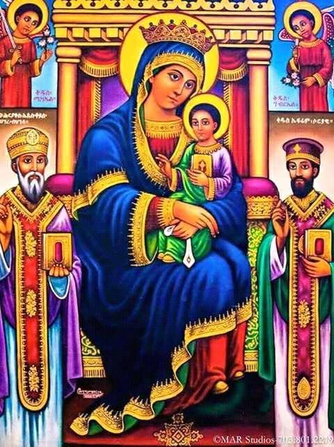

For personal spiritual counsel and the Sacrament of Neseha, connect with a penitent father. This sacred encounter offers guidance, forgiveness, and profound spiritual renewal according to the teachings of the Church.
Understanding the Holy Trinity in EOTC
Delve into the foundational doctrine of the Holy Trinity as understood and taught by the Ethiopian Orthodox Tewahedo Church.
The Life and Miracles of St. Mary
Explore the venerated life and countless miracles of the Holy Virgin Mary, the Theotokos, in Orthodox tradition.
Upcoming Major Feast: Meskel (Finding of the True Cross)
Learn about the vibrant traditions and spiritual significance of Meskel, one of the greatest feasts in the EOTC calendar.